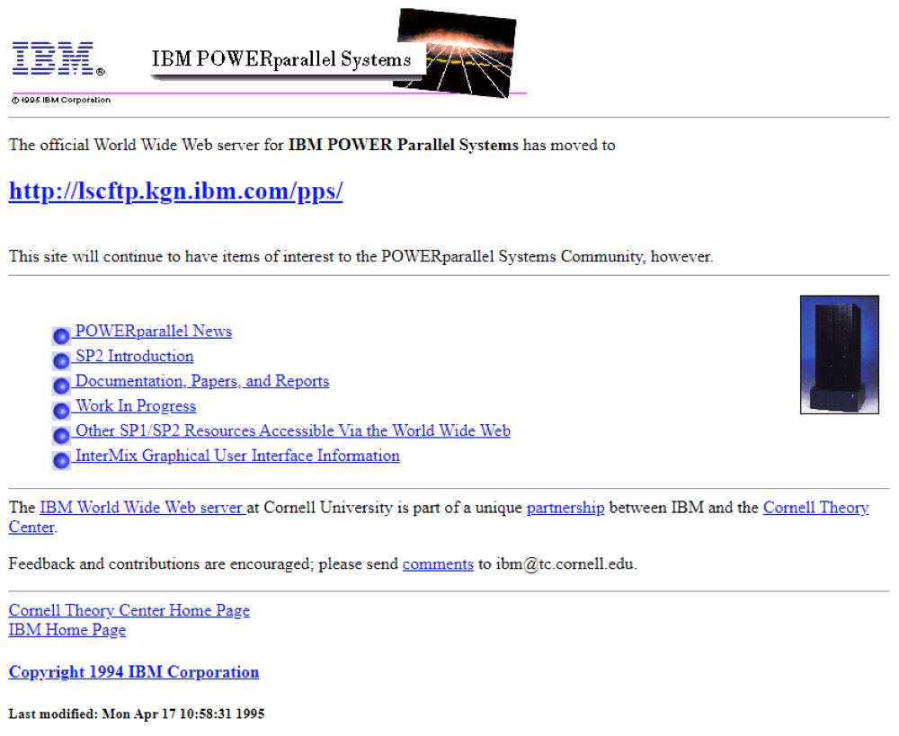

CSS & JavaScript: The Web Comes Alive
How two technologies were able to give life to the web.
Hakon Wium Lie - The creator of CSS [1]

IBM POWER Parallel Systems in 1995 [2]
The Problem with Early HTML
In the early days of the web, HTML was never intended for design and only for structure to share information across the web. Headings, paragraphs, and links were the only structures needed to accomplish this. As the web grew beyond academia and more so in the direct eye of the public, developers and businesses wanted more power over the design of their pages. With no styling system, they were forced to use basic HTML attributes to achieve basic design effects.
The results were terrible as style and content were tangled together. This meant changing the color of a heading required editing every single page on the site individually. Pages were incosistent across the different browsers and nearly impossible to maintain. The pages had no behavior and did not react to user interactivity. The web was considered completely static and it was clear something needed to change to meet the needs of society.
The Arrival of CSS
Separating style & structure
CSS was invented by Håkon Wium Lie in 1994 while he was working at CERN, along with Tim Berners-Lee.[1] The concept of CSS was surprisingly simple. Instead of having to code each page individually with HTML tags to change the look and feel, CSS allowed for individual elements to be styled via a whole separate style sheet. This enabled the entire website to be styled by using just one style sheet. The first official release of CSS, CSS 1.0, would later become a W3C Recommendation in December 1996.[2]
CSS was a shock to the system. Learning and using CSS was very frustrating. The browser support was not the same from one browser to another. From simple bugs to more complex ones, the lack of uniformity in each browser made the work of web designers a nightmare. They had to take into account every single browser on each and every computer in order to ensure that their site would behave properly.
However, the days when layout and content were all jumbled together in the HTML are over. Now design and content can be cleanly separated, and controlling a site is much easier.
The Arrival of JavaScript
10 days that changed the web
In May 1995, Brendan Eich sat down at Netscape Communications and in 10 days, crafted a programming language.[3] The language was initially called Mocha and later LiveScript but was eventually labeled JavaScript. JavaScript was one of the first applications to allow a browser to execute code that resides on a remote server directly on an end user's computer.
Those 10 days would end up powering the modern web as we know it. The first couple of weeks of scripting were relatively simple form validation, simple animation effects, and popup alerts. Suddenly web pages could react to user input without needing to reload the corresponding web page from the server. It was revolutionary.
Microsoft incorporated Brendan Eich’s JavaScript code, but renamed it JScript for Internet Explorer 3.0, which was released in 1996. It was close enough to JavaScript to cause confusion, but different enough to cause chaos.
Timeline of Events
1994
- Håkon Wium Lie comes up with the idea of CSS while he is working at CERN. He wants to find a way to keep the design separate from the HTML structure.
1995
- Brendan Eich creates JavaScript in ten days. He is working at Netscape Communications at that time. Initially he names it Mocha.
- JavaScript is shipped with Netscape Navigator 2.0. This gives browsers the ability to run code on the client side for the time.
1996
- CSS 1.0 becomes a W3C recommendation in December. This introduces font styling and colors and basic layout control.
- Microsoft incorporates Brendan Eichs JavaScript code. However they rename it JScript for Internet Explorer 3.0.
1997
- JavaScript is submitted to ECMA International. It is standardized as ECMAScript 1.0.
- CSS starts gaining browser adoption. However inconsistencies between browsers remain an issue.
2005
- Jesse James Garrett coins the term AJAX. This enables pages to fetch data from a server and update content without a full page reload.
- Google Maps launches. It is an example of what JavaScript and AJAX can achieve.
2009
- Node.js is created by Ryan Dahl. This takes JavaScript outside the browser for the time.
2011
- CSS3 modules begin rolling out. These introduce. Transitions and border-radius and media queries.
- ES5 becomes the baseline standard supported across all browsers.